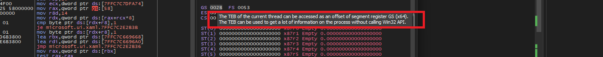
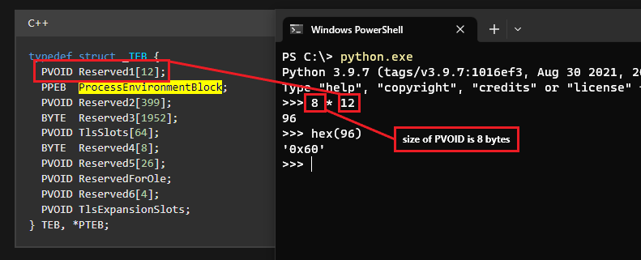
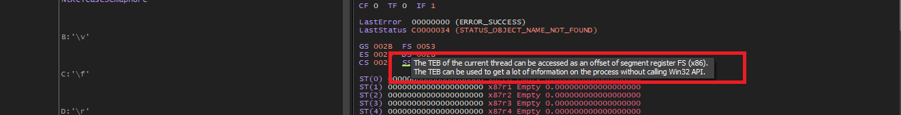
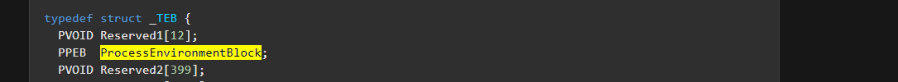
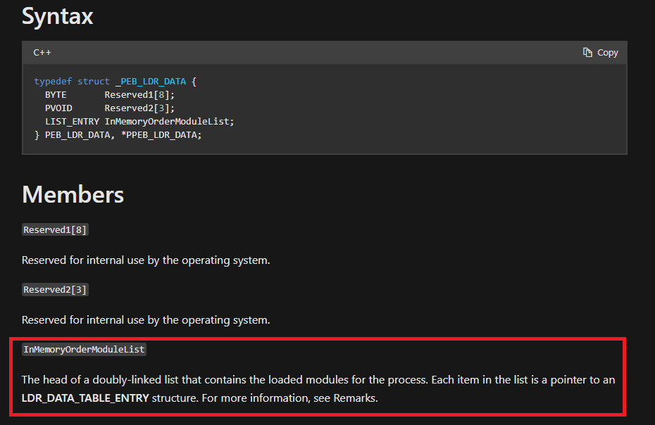
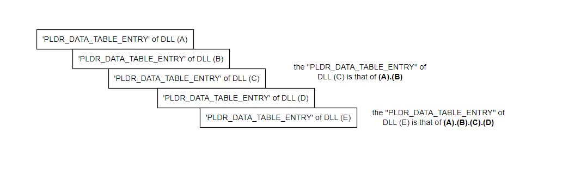
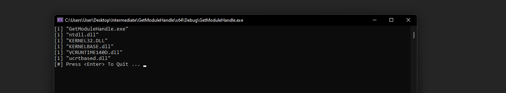
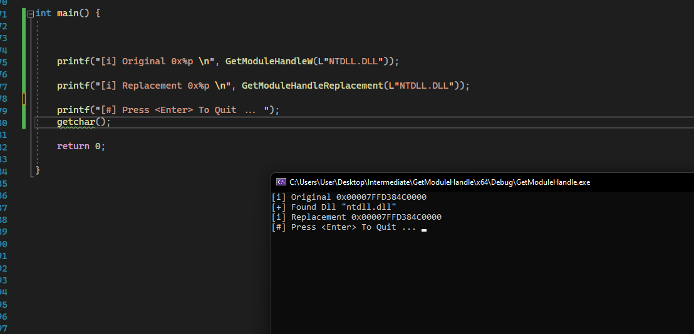

Introduction
The GetModuleHandle function retrieves a handle for a specified DLL. The function returns a handle to the DLL or NULL if the DLL does not exist in the calling process.
In this module, a function that will replace GetModuleHandle will be implemented. The new function's prototype is shown below.
HMODULE GetModuleHandleReplacement(IN LPCWSTR szModuleName){}How GetModuleHandle Works
The HMODULE data type is the base address of the loaded DLL which is where the DLL is located in the address space of the process. Therefore, the goal of the replacement function is to retrieve the base address of a specified DLL.
The Process Environment Block (PEB) contains information regarding the loaded DLLs, notably the PEB_LDR_DATA Ldr member of the PEB structure. Thus, the initial step is to access this member through the PEB structure.
PEB In 64-bit Systems
Recall that a pointer to the PEB structure is found within the Thread Environment Block (TEB) structure.

In 64-bit systems, an offset to the pointer of the TEB structure is stored in the GS register. The following image is from x64dbg.

Method 1: Retrieving The PEB In 64-Bit Systems
There are two different approaches to retrieving the PEB. The first method involves retrieving the TEB structure and then getting a pointer to the PEB. This approach can be performed using the __readgsqword(0x30) macro in Visual Studio which reads 0x30 bytes from the GS register to reach a pointer to the TEB structure.
// Method 1
PTEB pTeb = (PTEB)__readgsqword(0x30);
PPEB pPeb = (PPEB)pTeb->ProcessEnvironmentBlock;Method 2: Retrieving The PEB In 64-Bit Systems
The next method retrieves the PEB structure directly by skipping the TEB structure using __readgsqword(0x60) macro in Visual Studio which reads 0x60 bytes from GS register.
// Method 2
PPEB pPeb2 = (PPEB)(__readgsqword(0x60));This can be done because the ProcessEnvironmentBlock element is 0x60 (hex) or 96 bytes from the start of the TEB structure

PEB In 32-bit Systems
In 32-bit systems, an offset to the pointer of the TEB structure is stored in the FS register. The following image is from x32dbg.

And recall that a pointer of the PEB structure is in the TEB.

Method 1: Retrieving The PEB In 32-Bit Systems
Similarly to 64-bit systems, there are two methods to retrieve the PEB.
The first method involves getting the TEB structure and then getting the PEB structure using the __readfsdword(0x18) macro in Visual Studio which reads 0x18 bytes from the FS register.
// Method 1
PTEB pTeb = (PTEB)__readfsdword(0x18);
PPEB pPeb = (PPEB)pTeb->ProcessEnvironmentBlock;Method 2: Retrieving The PEB In 32-Bit Systems
The second method gets the PEB directly by skipping the TEB structure using the __readfsdword(0x30) macro in Visual Studio which reads 0x30 bytes from the FS register.
// Method 2
PPEB pPeb2 = (PPEB)(__readfsdword(0x30));0x30 (hex) is 48 bytes which is the offset of the ProcessEnvironmentBlock element from the 32-bit TEB structure. The PVOID data type is 4 bytes in 32-bit systems.
Enumerating DLLs
Once the PEB structure has been retrieved, the next step is to access the PEB_LDR_DATA Ldr member. Recall that this member contains information regarding the loaded DLLs in the process.
PEB_LDR_DATA Structure
The PEB_LDR_DATA structure is shown below. The important member in this structure is LIST_ENTRY InMemoryOrderModuleList.
typedef struct _PEB_LDR_DATA {
BYTE Reserved1[8];
PVOID Reserved2[3];
LIST_ENTRY InMemoryOrderModuleList;
} PEB_LDR_DATA, *PPEB_LDR_DATA;LIST_ENTRY Structure
The LIST_ENTRY structure shown below is a doubly-linked list, which is essentially the same as arrays but easier to access adjacent elements.
typedef struct _LIST_ENTRY {
struct _LIST_ENTRY *Flink;
struct _LIST_ENTRY *Blink;
} LIST_ENTRY, *PLIST_ENTRY, *RESTRICTED_POINTER PRLIST_ENTRY;Doubly-linked lists use the Flink and Blink elements as the head and tail pointers, respectively. This means Flink points to the next node in the list whereas the Blink element points to the previous node in the list. These pointers are used to traverse the linked list in both directions. Knowing this, to start enumerating this list, one should start by accessing its first element, InMemoryOrderModuleList.Flink.
According to Microsoft's definition for the InMemoryOrderModuleList member, it states that each item in the list is a pointer to an LDR_DATA_TABLE_ENTRY structure.

LDR_DATA_TABLE_ENTRY Structure
The LDR_DATA_TABLE_ENTRY structure represents a DLL inside the linked list of loaded DLLs for the process. Every LDR_DATA_TABLE_ENTRY represents a unique DLL.
typedef struct _LDR_DATA_TABLE_ENTRY {
PVOID Reserved1[2];
LIST_ENTRY InMemoryOrderLinks; // doubly-linked list that contains the in-memory order of loaded modules
PVOID Reserved2[2];
PVOID DllBase;
PVOID EntryPoint;
PVOID Reserved3;
UNICODE_STRING FullDllName; // 'UNICODE_STRING' structure that contains the filename of the loaded module
BYTE Reserved4[8];
PVOID Reserved5[3];
union {
ULONG CheckSum;
PVOID Reserved6;
};
ULONG TimeDateStamp;
} LDR_DATA_TABLE_ENTRY, *PLDR_DATA_TABLE_ENTRY;Implementation Logic
Based on everything mentioned so far, the required actions are:
HMODULE GetModuleHandleReplacement(IN LPCWSTR szModuleName) {
// Getting peb
#ifdef _WIN64 // if compiling as x64
PPEB pPeb = (PEB*)(__readgsqword(0x60));
#elif _WIN32 // if compiling as x32
PPEB pPeb = (PEB*)(__readfsdword(0x30));
#endif// Getting the Ldr
PPEB_LDR_DATA pLdr = (PPEB_LDR_DATA)(pPeb->Ldr);
// Getting the first element in the linked list which contains information about the first module
PLDR_DATA_TABLE_ENTRY pDte = (PLDR_DATA_TABLE_ENTRY)(pLdr->InMemoryOrderModuleList.Flink);
}Since every pDte represents a unique DLL inside of the linked list, it's possible to get to the next element using the following line of code:
pDte = *(PLDR_DATA_TABLE_ENTRY*)(pDte);The above line of code may look complex but all it is doing is dereferencing the value stored at the address pointed to by pDte and then casting the result to a pointer to the PLDR_DATA_TABLE_ENTRY structure. This is simply how linked lists work, which is something like the following image

Enumerate DLLs - Code
The code snippet below will retrieve the name of the DLLs already loaded inside the calling process. The function searches for the target module, szModuleName. If there is a match, the function returns a handle to the DLL (HMODULE), otherwise, it returns NULL.
HMODULE GetModuleHandleReplacement(IN LPCWSTR szModuleName) {
// Getting PEB
#ifdef _WIN64 // if compiling as x64
PPEB pPeb = (PEB*)(__readgsqword(0x60));
#elif _WIN32 // if compiling as x32
PPEB pPeb = (PEB*)(__readfsdword(0x30));
#endif// Getting Ldr
PPEB_LDR_DATA pLdr = (PPEB_LDR_DATA)(pPeb->Ldr);
// Getting the first element in the linked list which contains information about the first module
PLDR_DATA_TABLE_ENTRY pDte = (PLDR_DATA_TABLE_ENTRY)(pLdr->InMemoryOrderModuleList.Flink);
while (pDte) {
// If not null
if (pDte->FullDllName.Length != NULL) {
// Print the DLL name
wprintf(L"[i] \"%s\" \n", pDte->FullDllName.Buffer);
}
else {
break;
}
// Next element in the linked list
pDte = *(PLDR_DATA_TABLE_ENTRY*)(pDte);
}
return NULL;
}
Case Sensitive DLL Names
By examining the output in the previous image, one can easily observe that some DLL names are capitalized and others are not, which affects the ability to obtain the DLL base address (HMODULE). For example, if one is searching for the KERNEL32.DLL DLL and passes Kernel32.DLL instead, the wcscmp function will treat both as different strings.
To address this, the helper function IsStringEqual was created to take two strings and convert them into a lower-case representation, then compare them in this state. It returns true if both strings are equal and false otherwise.
BOOL IsStringEqual (IN LPCWSTR Str1, IN LPCWSTR Str2) {
WCHAR lStr1 [MAX_PATH],
lStr2 [MAX_PATH];
int len1 = lstrlenW(Str1),
len2 = lstrlenW(Str2);
int i = 0,
j = 0;
// Checking length. We dont want to overflow the buffers
if (len1 >= MAX_PATH || len2 >= MAX_PATH)
return FALSE;
// Converting Str1 to lower case string (lStr1)
for (i = 0; i < len1; i++){
lStr1[i] = (WCHAR)tolower(Str1[i]);
}
lStr1[i++] = L'\0'; // null terminating
// Converting Str2 to lower case string (lStr2)
for (j = 0; j < len2; j++) {
lStr2[j] = (WCHAR)tolower(Str2[j]);
}
lStr2[j++] = L'\0'; // null terminating
// Comparing the lower-case strings
if (lstrcmpiW(lStr1, lStr2) == 0)
return TRUE;
return FALSE;
}DLL Base Address
Obtaining the DLL base address requires referencing the LDR_DATA_TABLE_ENTRY structure. Unfortunately, large chunks of the structure are missing in Microsoft's official documentation. Therefore, to gain a better understanding of the structure, a search was conducted on Windows Vista Kernel Structures. The results for the structure can be found here.
typedef struct _LDR_DATA_TABLE_ENTRY {
LIST_ENTRY InLoadOrderLinks;
LIST_ENTRY InMemoryOrderLinks;
LIST_ENTRY InInitializationOrderLinks;
PVOID DllBase;
PVOID EntryPoint;
ULONG SizeOfImage;
UNICODE_STRING FullDllName;
UNICODE_STRING BaseDllName;
ULONG Flags;
WORD LoadCount;
WORD TlsIndex;
union {
LIST_ENTRY HashLinks;
struct {
PVOID SectionPointer;
ULONG CheckSum;
};
};
union {
ULONG TimeDateStamp;
PVOID LoadedImports;
};
PACTIVATION_CONTEXT EntryPointActivationContext;
PVOID PatchInformation;
LIST_ENTRY ForwarderLinks;
LIST_ENTRY ServiceTagLinks;
LIST_ENTRY StaticLinks;
} LDR_DATA_TABLE_ENTRY, * PLDR_DATA_TABLE_ENTRY;The DLL base address is InInitializationOrderLinks.Flink, although the name does not suggest that, but unfortunately Microsoft likes to confuse people. By comparing this member to Microsoft's official documentation of LDR_DATA_TABLE_ENTRY, it can be seen that the base address of the DLL is a reserved element (Reserved2[0]).
With this in mind, the GetModuleHandle replacement function can be completed.
GetModuleHandle Replacement Function
GetModuleHandleReplacement is the function that replaces GetModuleHandle. It will search for the given DLL name and if it's loaded by the process it returns a handle to the DLL.
HMODULE GetModuleHandleReplacement(IN LPCWSTR szModuleName) {
// Getting PEB
#ifdef _WIN64 // if compiling as x64
PPEB pPeb = (PEB*)(__readgsqword(0x60));
#elif _WIN32 // if compiling as x32
PPEB pPeb = (PEB*)(__readfsdword(0x30));
#endif// Getting Ldr
PPEB_LDR_DATA pLdr = (PPEB_LDR_DATA)(pPeb->Ldr);
// Getting the first element in the linked list (contains information about the first module)
PLDR_DATA_TABLE_ENTRY pDte = (PLDR_DATA_TABLE_ENTRY)(pLdr->InMemoryOrderModuleList.Flink);
while (pDte) {
// If not null
if (pDte->FullDllName.Length != NULL) {
// Check if both equal
if (IsStringEqual(pDte->FullDllName.Buffer, szModuleName)) {
wprintf(L"[+] Found Dll \"%s\" \n", pDte->FullDllName.Buffer);
#ifdef STRUCTSreturn (HMODULE)(pDte->InInitializationOrderLinks.Flink);
#elsereturn (HMODULE)pDte->Reserved2[0];
#endif // STRUCTS}
// wprintf(L"[i] \"%s\" \n", pDte->FullDllName.Buffer);
}
else {
break;
}
// Next element in the linked list
pDte = *(PLDR_DATA_TABLE_ENTRY*)(pDte);
}
return NULL;
}One part of the code which was not explained is shown below. This part of the code determines whether Microsoft's version of the LDR_DATA_TABLE_ENTRY structure is being used or the one from Windows Vista Kernel Structures. Depending on which one was used, the name of the member changes.
#ifdef STRUCTSreturn (HMODULE)(pDte->InInitializationOrderLinks.Flink);
#elsereturn (HMODULE)pDte->Reserved2[0];
#endif // STRUCTSGetModuleHandleReplacement2
Another implementation of the GetModuleHandleReplacement function can be found in this module's code. GetModuleHandleReplacement2 performs DLL enumeration using the head and the linked list's elements which utilize the doubly linked list concept. This function was created for users that are familiar with linked lists.
Demo
